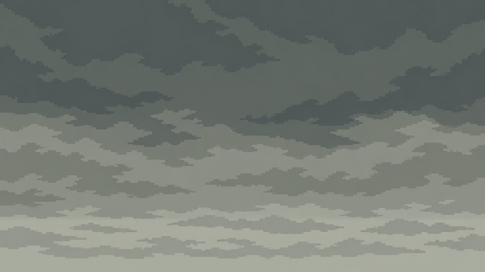
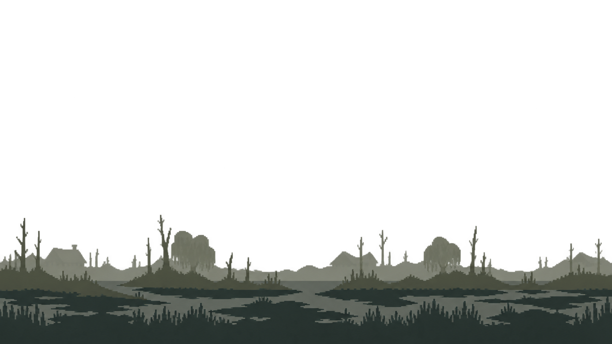
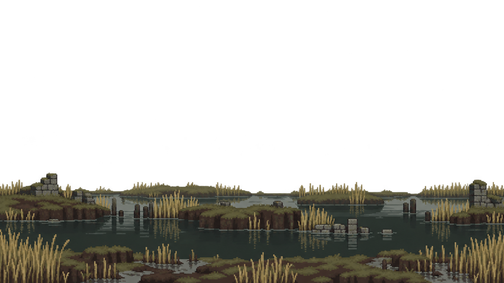
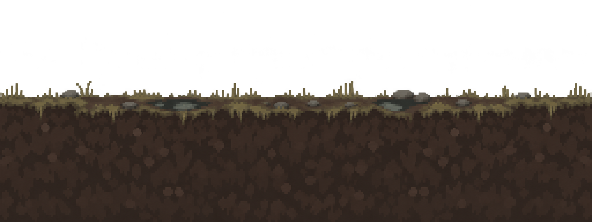
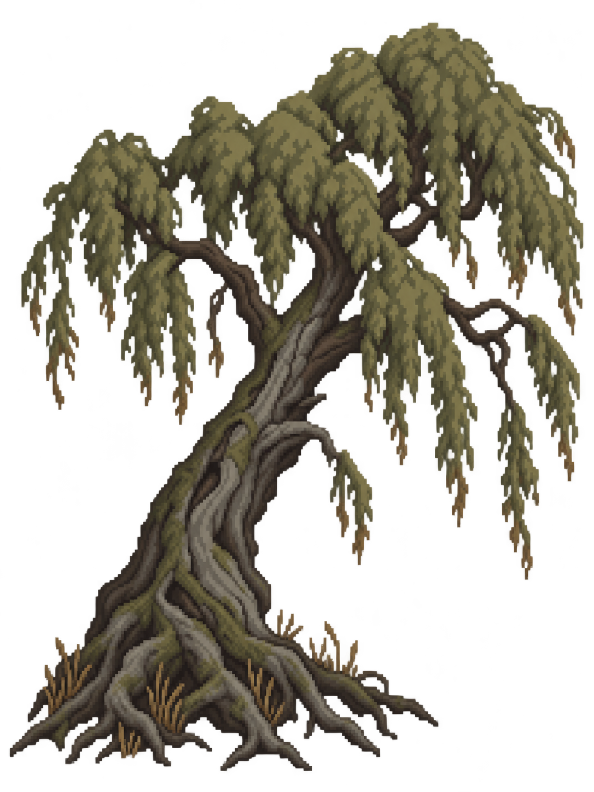

Overcast skyBroad, subdued clouds. Opaque base layer; horizontal edges still need matching.Target 640 × 360 · StationaryExact prompt
Distant silhouettesActual transparent sky. The horizon sits too low and contains more water and reeds than the intended distant layer.Target 640 × 360 · Parallax 0.15Exact prompt
Pools and reed banksReadable Wetlands materials and real transparency. Detailed for a layer directly behind combatants.Target 640 × 360 · Parallax 0.35Exact prompt
Raised peat pathTransparent original retained. Needs a higher walking surface, crisp alpha edges and matching seams.Target 256 × 96 · Ground speedExact prompt
Leaning willowStrong silhouette and actual transparency. Fine fringe pixels and soft edge alpha need cleanup at final size.Target 192 × 256 · Height 3.4 adventurersExact prompt